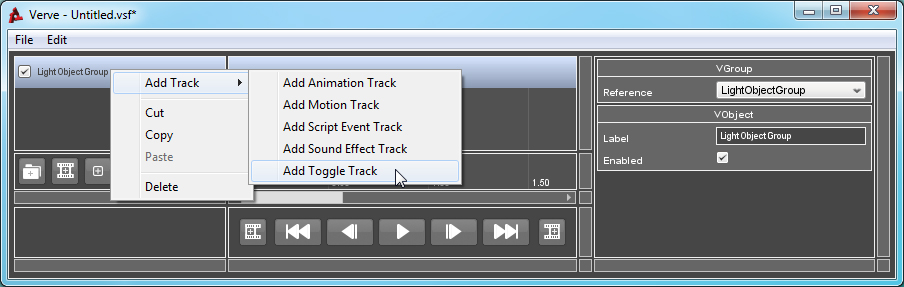
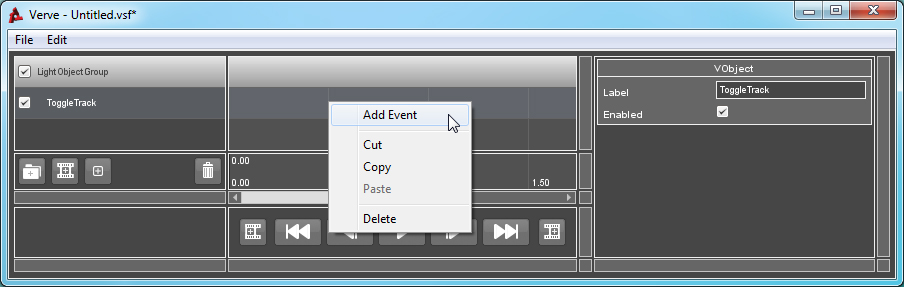
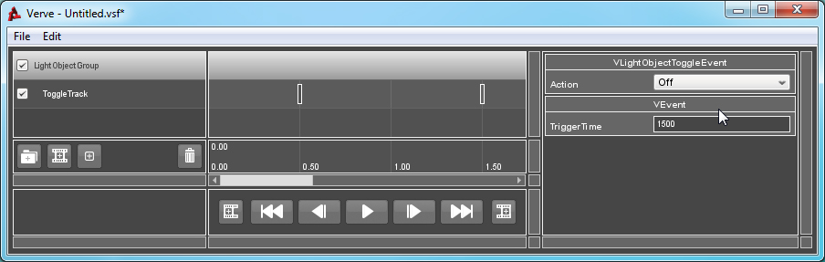

Tutorial : Light Object Toggle
Objects: VLightObjectToggleTrack, VLightObjectToggleEvent
During a sequence you might want to alter the state or playing animation of a light object. The Light Object Group gives you the same control as a regular Scene Object Group, with the added ability to Enable or Disable the light, or apply an Animation sequence using a predefined LightAnimData object.
The object you reference with a VLightObjectGroup must be a LightBase object or a derived class. This includes PointLight and SpotLight.
How to Use:
To toggle a Light Object, you must first create a valid Light Object Group. If you are unsure of how to create or validate a Group, click here.
Right-Click on the Group, go to "Add Track" and select "Add Toggle Track".

Right-Click on the Track and select "Add Event".

Select the newly created Event. The Property List window will refresh and inspect the Event. Update the "Action" property to determine whether to turn the referenced object ON or OFF once the Event is triggered.
